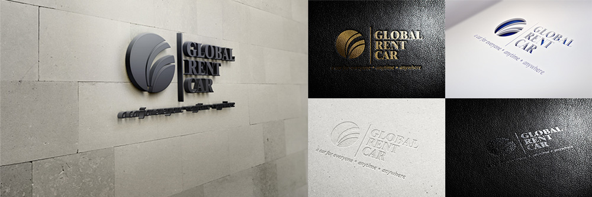

Logotipo Global Rent Car
Global Rent Car, una empresa mexicana dedicada desde hace más de 20 años al transporte terrestre de nivel ejecutivo. Posicionada como una importante compañia, decidieron actualizar la forma en que sus clientes y competidores los ven. Gracias a mi experiencia fuí llamado por ellos para realizar un estudio que determinara la mejor manera de mostrar su imágen hacia los demás.
El trabajo de posicionar su marca por delante de los demás no fué tarea fácil; el rubro en el que se desarrolla la empresa está lleno de buena competencia y cada vez más compañías emergentes del mismo giro. La profesionalidad de esta empresa y sus años de experiencia la colocan por delante de muchas otras.

Para la elección correcta de la nueva imágen de la empresa, se tomaron en cuenta numerosos aspectos; entre los que destacan: la profesionalidad, la experiencia, la seguridad y fiabilidad, la rapidez y el trato digno. Esto nos da una imágen sobria y determinante, que impone respeto ante los demás.
"La Seguridad nos distingue de la competencia" Nuestra imágen debe mostrar elegancia, sobriedad y debe transmitir una sensación de fiabilidad y confianza que les permita saber a nuestros clientes que usando nuestros servicios pueden estar tranquilos y enfocar sus ideas en cosas más importantes.
Descripción Significado del logotipo
La representación abstracta de la tierra como un círculo y la inclusión anamorfica de la imágen esencial de una carretera me permitió definir la mejor forma para trazar el isologotipo de esta empresa. El uso de sus colores institucionales en una forma sutil de degradados y jugar un poco con la tercera dimensión, le da una forma esférica y la sensación de no ser plana; esto nos ayuda a definir mejor el carácter global de la empresa.
Una correcta elección de tipografías nos ayuda a representar las dos partes que contiene esta empresa: seriedad y actualidad. Un tipo clásico nos ayuda a orientar hacia la primera y uno estilizado y moderno muestra el segundo. La mezcla de las tres partes -el isologotipo y las dos tipografías- convergen en la representación de la marca empresarial y nos ayuda a transmitir las sensaciones que esperamos tenga el cliente.
"Queremos que sea sencillo, que muestre nuestra modernidad sin salirse de nuestra seriedad" Los elementos que debe contener nuestro logotipo tienen que saber transmitir a nuestros clientes que nos adaptamos a los tiempos modernos, pero que eso no significa dejar a un lado nustra responsabilidad para con ellos, nusetra seriedad y el compromiso que tenemos de brindar siempre el mejor servicio que nos sea posible.
Construcción Cómo se hizo
Con la idea en la mente de lo que la empresa desea representar a través de su logotipo, se procedió a su contrucción. Partiendo de la base de un círculo y segmentándolo de manera tal que podamos dividirlo en seis secciones diatintas para después proceder a su coloración alternadamente, se dibujan los círculos correspondientes en base a un cálculo predefinido para determinar las distancias entre las secantes.
Prosiguiendo y a partir de su representación en dos dimensiones, continuamos con la degradación de sus colores base de tal manera que el foco se encuantre en la parte superios y un poco a la izquierda de la primera sección. Se traza la extrusión del material para generar la representación visual en tres dimensiones del isologotipo. Y se termina con el suavizado y optimización de los bordes generados para reducir su dureza visual y darle una apariencia más real.
El trazado de este logotipo en particular resultó tener un grado de dificultad amplio, sobretodo debido a los cálculos necesarios para determinar las separaciones exactas que debían tener las secantes. Al tratarse sólo de círculos te enfrentas con la problemática de que los cálculos generados no son completamente exactos y, al tratar de cambiar el tamaño por ejemplo, las secantes se encuentran ligeramente desplazadas.